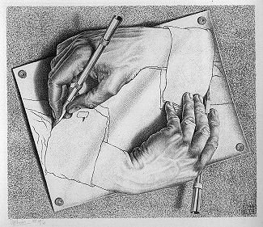

Drawing Hands
M. C. Escher · 1948 · Lithograph · 28.2 × 33.2 cm
In copyright. Look and learn: shown for study, not for download.
Escher made this lithograph in 1948. Each hand holds a mechanical pencil. His son George Escher described the print as a true self-portrait of his father. Douglas Hofstadter's book Gödel, Escher, Bach, published in 1979, uses it as an example of a strange loop.